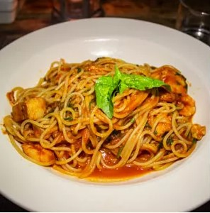
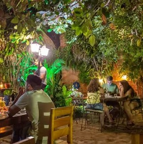
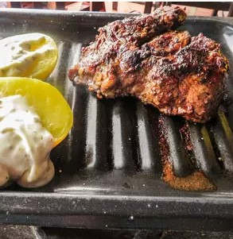
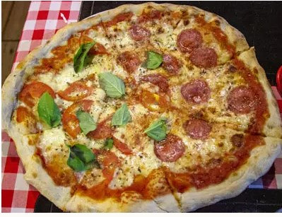
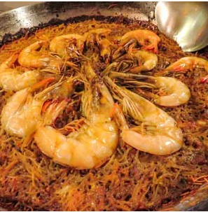
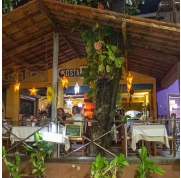

Mezza Luna


O restaurante mais charmoso da vila tem chão de areia, luz de velas e música boa ao vivo: é o Mezza Luna. Um caminho de fundos de garrafa enterradas leva você de um bequinho na Broadway até a sua mesa no pátio. Da cozinha saem massas al dente (o dono é italiano), filés (na manteiga com alecrim; com mostarda e vinho; com molho de gorgonzola), camarões (ao alho e óleo; ao azeite com ervas) e risotos (de lagosta com ervas finas; aos quatro queijos). Para não esperar, reserve. Fecha 3ª.
El Argentino


A churrascaria El Argentino oferece picanha e cortes argentinos como bife de chorizo, ojo de bife e asado de tira, que vêm à mesa em fogareirinhos (que podem acabar passando demais a carne). Outra marca registrada é o cordeiro assado em fogo de chão. Batatas rústicas, abobrinha grelhada e molho chimichurri estão entre os acompanhamentos.
Cantinho Sardenha

Gosta de pizza de massa leve, mas sem ser biscoito, como se faz em Nápoles e no sul da Itália? Então você é do meu time e vai gostar as redondas do Cantinho da Sardenha, feitas com fermentação natural e mozzarella italiana. Também serve bruschettas, massas e frutos do mar, como um polvo grelhado com batatas. De sobremesa, pannacota.
Costa Brava


Outra cozinha europeia representada na Broadway: o Costa Brava se dedica desde 2003 à culinária espanhola. Há 7 versões de paella. Três delas combinam apenas frutos do mar, como é a preferência nacional. Outras três seguem o estilo valenciano e misturam frutos do mar com lingüiça, costelinha ou frango. Há também uma paella vegetariana. Outra curiosidade é o fideuá — um parente catalão da paella que substitui o arroz por macarrão cabelo de anjo picadinho.